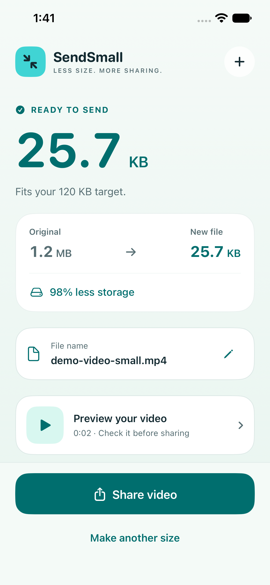

Bring one video.
Choose a video from Photos or Files. Your original stays in its original location.
A VIDEO SIZE TOOL
Choose a size, check the finished video, and send the copy you meant to send.
One upfront purchase · No app subscription.
View the iPhone & iPad App Store listing. Check your storefront for current pricing.
A dedicated Mac version for macOS 14 or later is in preparation.

A SMALL, PRACTICAL WORKFLOW
Choose a video from Photos or Files. Your original stays in its original location.
Pick 10, 25 or 50 MB, or enter your own target. SendSmall measures the finished result.
Preview it and give it a useful filename. Save or share a copy to a destination you choose; the prepared Mac version also offers Save Video Copy.
CHECK THE DETAILS
Some videos already fit. Those are copied without re-encoding. For others, SendSmall creates an H.264 MP4 and checks its size. An over-limit result is clearly identified, so you can choose a larger target or another video.
INSIDE THE APP
Genuine simulator screens from a synthetic video test. Tap a screen to inspect it. Example sizes do not predict the result for your files.
ON YOUR DEVICE
Processing happens on your device. SendSmall has no developer-hosted video service, accounts, ads or analytics.
Photos and file providers may download items from your own cloud storage. Inputs and results in SendSmall are temporary: save a finished copy before creating another result, replacing or resetting the workflow, or reopening the app. There is no automatic video, workflow or settings sync between devices; move a saved video through a destination you choose.
Read the privacy policy →No app subscription. Check the App Store listing for current pricing and availability.
The dedicated Mac version is in preparation.